Android Linux内核编译调试
文章目录
对于在Windows上写代码写习惯的人,调试是必不可少的手段,但是转到Android以后,发现调试手段异常简陋,跟Windows简直不是一个级别,特别是Android的内核调试,网上资料也相对较少,不过通过一段时间的倒腾,我终于找到了还算靠谱的调试方法.就是利用Emulator + Eclipse进行Android Linux内核调试.
1.系统预装环境
在目前为止,都是使用的最新版本的Android开发环境
Ubuntu 14.04
Android SDK( adt-bundle-linux-x86_64-20140702 )
Android NDK( android-ndk32-r10b-linux-x86_64 )
安装好这几个环境以后,设置一下环境变量
export PATH=$PATH:ANDROID_NDK_HOME/toolchains/arm-linux-androideabi-4.6/prebuilt/linux-x86_64/bin
ANDROID_NDK_HOME键值为Android NDK安装目录,设置这个环境变量的目的主要是为了使用gcc 4.6版本编译linux内核.
export PATH=$PATH:ANDROID_SDK_HOME/sdk/tools
ANDROID_SDK_HOME是Android SDK的安装目录,设置这个环境变量的目的是方便使用emulator命令!
万事具备.使用前面安装的Android SDK创建一个虚拟的设备.并且确保 emulator -avd Device_Test这条命令可以启动Android 模拟器.先热身下.
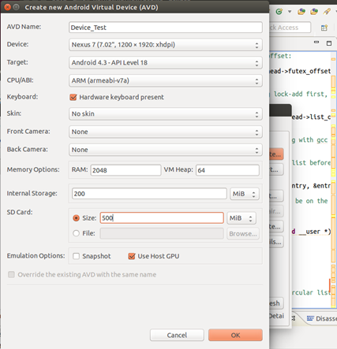
2.Android Linux内核编译
2.1 下载GoldFish 源码
mkdir kernel
cd kernel
git clone http://android.googlesource.com/kernel/goldfish.git
GoldFish是适配模拟器的内核源码,如果是要具体适配其他机型,请选择其他源码,这边不展开了,详情参考链接有说明. 如果失败了,换https.我换https是因为使用了代理,现在google被墙,不使用代理搞不动!
git clone https://android.googlesource.com/kernel/goldfish.git
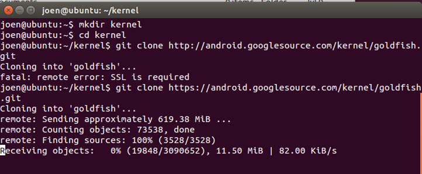
下载过程看你的代理速度了,而且不能中断.中断了就要重新来,特别的麻烦和恶心!所以我上传了一份到百度云. 和上面goldfish出来的一样.可以考虑去下载
http://pan.baidu.com/s/1i3yzhbv
下载或者解压完成以后会在kernel目录下会生成一个goldfish文件夹,进入此目录.查看所有分支
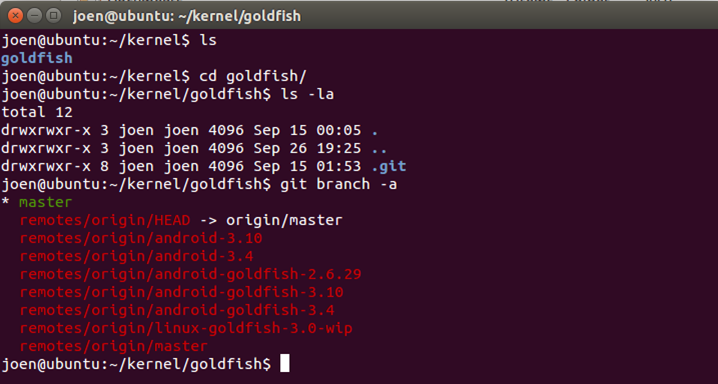
可以看到, 有很多的版本, 2.6.29和3.4我都测试过. 编译和运行没有任何问题. 所以这边我们拉2.6.29的源码
git checkout remotes/origin/android-goldfish-2.6.29
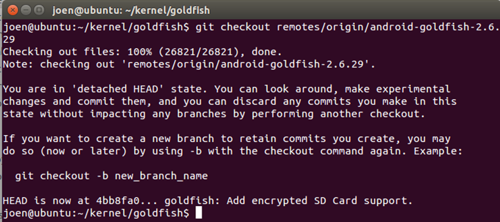
然后目录下就有很多文件了,说明Android Linux的源码下载成功!
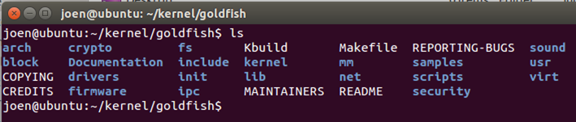
3.2 编译GoldFish 源码
编译源码之前,请确认已经将NDK的编译工具设置到环境变量中.我们将使用上述这个目录下的交叉编译器arm-linux-androideabi-gcc
export PATH=$PATH:ANDROID_NDK_HOME/toolchains/arm-linux-androideabi-4.6/prebuilt/linux-x86_64/bin
然后在glodfish目录下用gedit打开Makefile文件,找到这两行文字:
#ARCH ?= $(SUBARCH)
#CROSS_COMPILE ?=
修改成
ARCH ?= arm
CROSS_COMPILE ?= arm-linux-androideabi-
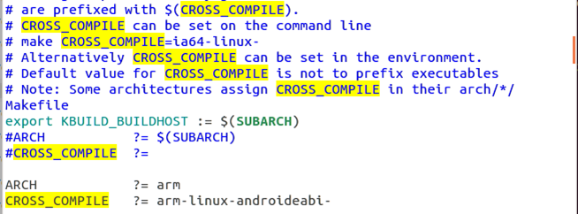
保存文件, 然后
make goldfish_armv7_defconfig
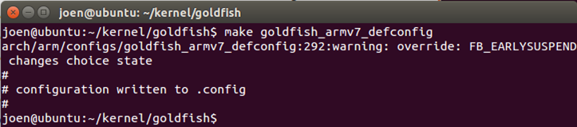
注:用$make goldfish_defconfig这样配置也可以编译通过,模拟器也可以启动,但是Android的开机画机就显示不了,$adb shell也死活连不上,原因就是这个goldfish_defconfig这个配置文件问题.
Android Linux的基本编译就设置完成了.我们先make 一下
make
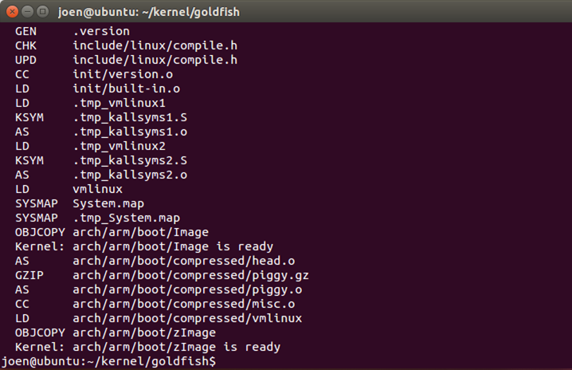
这就表示编译成功了,Linux的源码是Linux上少有的一键make过去的软件,比编译其他Linux应用简单不少.当然到这里编译出来的这个zImage已经可以运行了,但是离我们用来做调试的还是有差距.我们还要开启内核调试和关闭优化.
3.3 开启调试选项
开启Linux内核的调试选项, 先安装依赖性
sudo apt-get install ncurses-dev
然后
make menuconfig
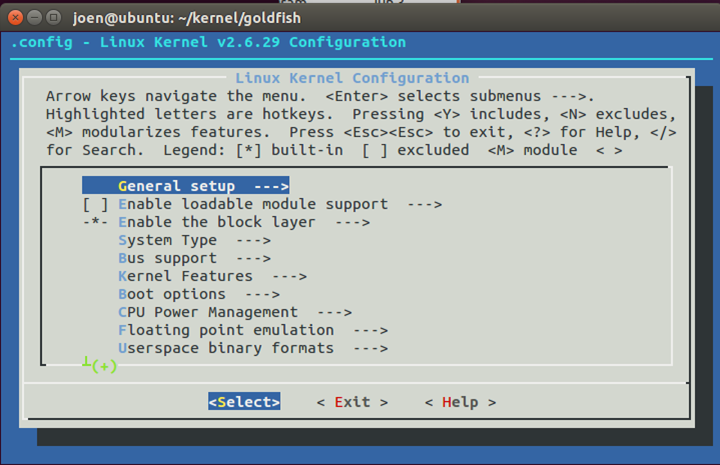
进入内核配置界面,勾选下列选项,同时关闭优化
General setup —>
[ ] Optimize for size，进行开启/关闭
[*] Kernel hacking
[*] Compile the kernel with debug info
[*] KGDB: kernel debugging with remote gdb —>
[*] Enable dynamic printk() call support
关闭Linux内核优化比较麻烦.我通过和朋友讨论,以及网络搜索还没有找到很好的解决办法,原因是默认的Linux内核编译是开启-O2优化的,这种模式之下会造成gdb和实际的源码对不上,相信使用过windbg调试-O2的朋友都有这个经历,所以我们需要关闭Linux的-O2,不过目前还没有很好的解决办法下面这篇文章讨论的解决办法是.针对文件进行关闭优化.下面这两篇文章的讨论都非常有意义:
http://www.lenky.info/archives/2013/03/2238
http://www.ibm.com/developerworks/cn/linux/l-kdb/
这边我们将-Os 和-O2都调成-O.针对具体文件关闭优化,这边就不搞了.具体到自己的调试任务的时候再看.
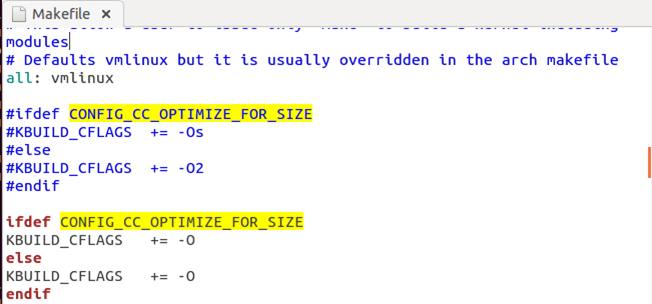
再进行编译,
make -B
选项-B以强制所有内核源文件全部重新编译(因为我前面编译过一次了,为了保险起见,就让目标文件全部重新生成吧)当出现这个画面,就表示编译成功了
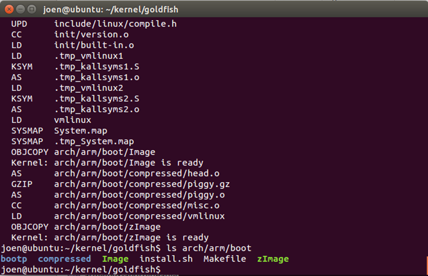
4.Android Linux内核调试
使用emulator 启动我们编译的内核试试
emulator -verbose -show-kernel -kernel ~/kernel/goldfish/arch/arm/boot/zImage -avd Device_Test
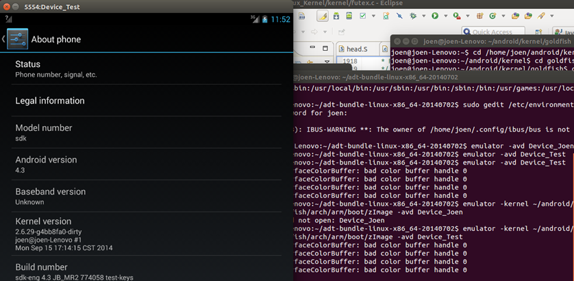
没错, 启动的就是我们的内核2.6.29 时间也对的上.说明我们编译的内核是可以运行的.下一步使用这条命令
emulator -verbose -show-kernel -kernel -netfast ~/kernel/goldfish/arch/arm/boot/zImage -avd Device_Test -qemu -gdb tcp::1234,ipv4, -S
这条命令会在tcp端口的1234监听.加了-S还会暂停下来,等待着gdb链接上来.这时候我们开启NDK目录下面的gdb.链上去然后
target remote localhost:1234
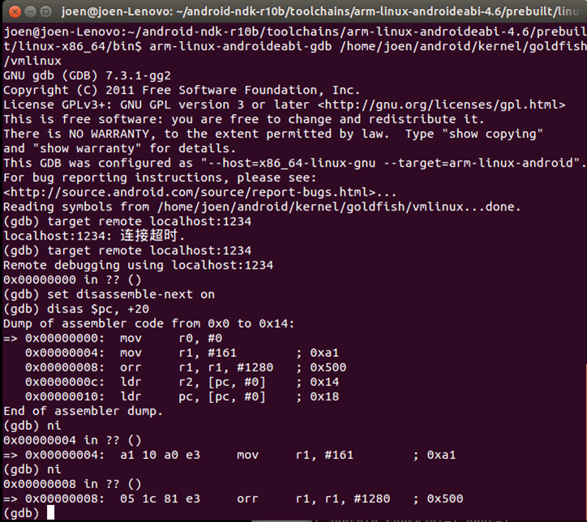
还可以测试几条命令, 看看源码是否跟上了.
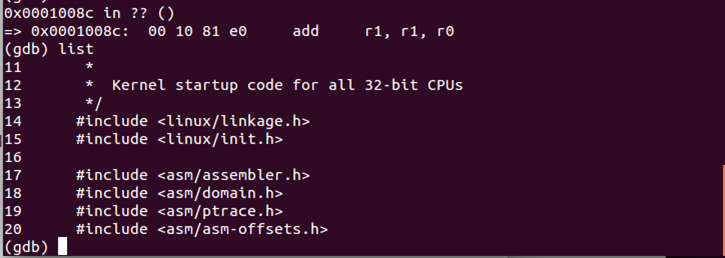
到这里为止,基本上是用gdb连上emulator 进行内核调试应该没问题了.但是仅仅到这里那离windbg的调试还是差好几条街.所以我们还是需要一个更好的调试方法.是用eclipse来作为调试的前端!
5.Eclipse前端
是用Eclipse作为前端的好处是,无论是在windows,在linux下面都没有问题.可以在一台windows的机器上,远程调试android内核.所以为了截图方便,我下面的操作都是在windows上弄的,在Linux上也是一样!当然要在windows上进行调试,首先要将上面的gold目录复制到windows的机器上,或者是共享给windows.这里就不展开了!
运行Eclipse,点击菜单Help->Install New Software… 在弹出的对话框里点击Work with:后面的下拉按钮,选择Kepler – http://download.eclipse.org/releases/kepler
不同的Eclipse版本选择不一样,与自己下载的版本一致一即可.然后在下面的选择框中将以下选项安装上
Programming Languages
C/C++ Autotools support
C/C++ Visual C++ Support
C/C++ Development Tools
C/C++ Development Tools SDK
Linux Tools
GDB Tracepoint Analysis
Mobile and Device Development
C/C++ GDB Hardware Debugging
安装好后自动重启Eclipse即可.再配置点击菜单Window -> Preferences在弹出的对话框中,点击左边的General->Workspace将右边的Build automatically复选框不选中.
再点击对话框左边的C/C++->Indexer,将右边的Enable indexer和Automatically update the index两复选框不选中.
接下来就简单了.创建一个工程,点击菜单File->New->Project…在弹出的对话框中选择C/C++->C Project再点击Next >按钮
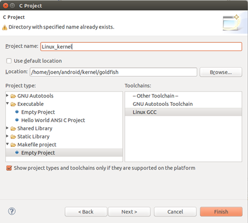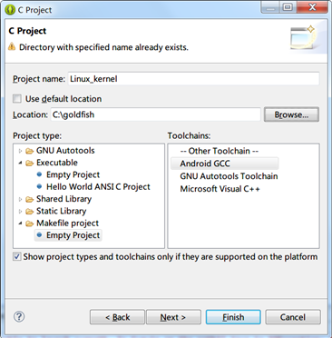
其中Project name:为工程名,可自定义.而Location:则为工程文件所在路径,此处设置为我们下载的源码路径而Project type:则设置为Makefile project/Empty Project, Toolchains:则设置为Linux GCC,如果是windows设置成Android GCC最后点击Finish即可.
接下来Windows和Linux都一样,进行DEBUG配置,在Project Explorer里右击刚创建的Linux_Kernel项目,在右键菜单中点击Debug As->Debug Configurations…在弹出的对话框中双击GDB Hardware Debugging 然后配置调试选项如下图
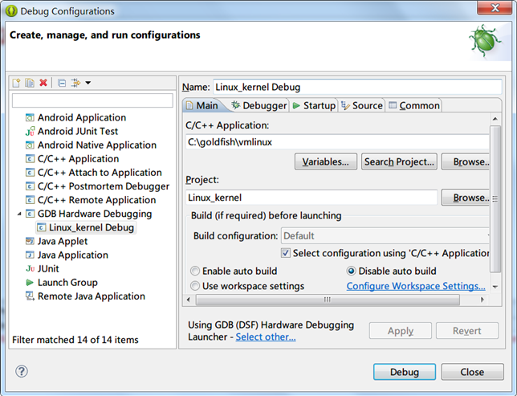
将C/C++ Application:栏设置为Linux Kernel源码编译出来的vmlinux文件所在路径(包含文件名),然后将Disable auto build选上,切换到Debugger页,修改配置如下截图.
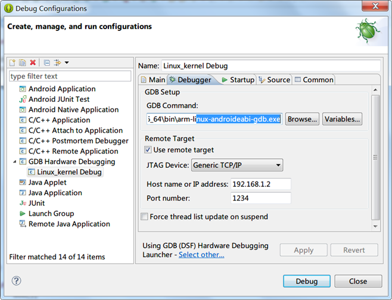
这里是设置gdb的路径还有远程地址和端口. Gdb的路径在ndk安装目录下的如下路径
\toolchains\arm-linux-androideabi-4.6\prebuilt\windows-x86_64\bin
远程地址,我的ubuntu机器是192.168.1.2这个随机应变即可.端口是我们运行emulator命令定义的端口.搞定这个切换到Startup页面
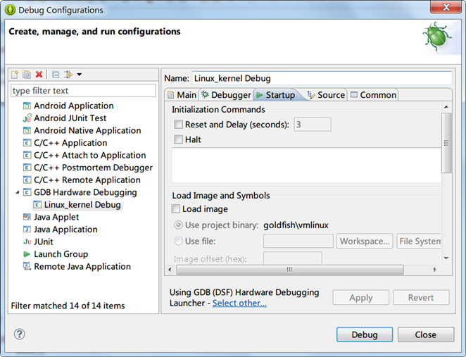
将Reset and Delay(seconds)和 Halt 还有Load image复选框的勾都去掉.然后点击Debug,这时候就停在第一条指令了
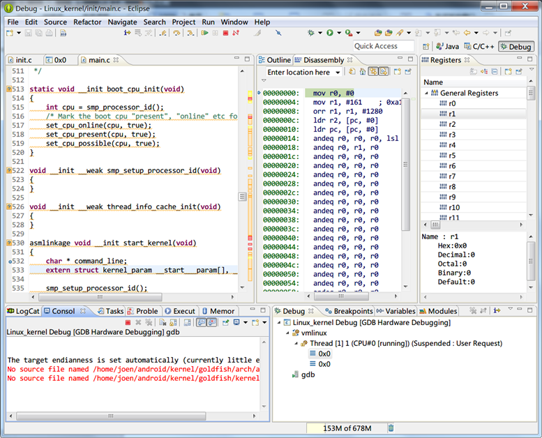
这时候还不能按F5, F6单步.我们在Execut窗口指定到main.c 然后在 start_kernel上下个断点也可以再Console窗口敲命令break start_kernel. 然后敲入命令C.
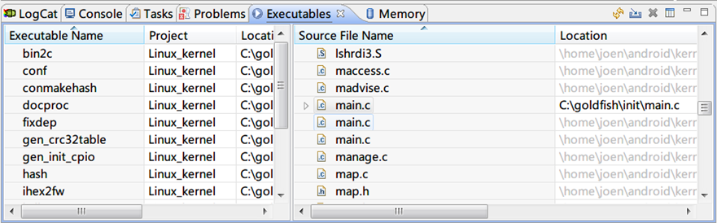
这时候就停在了Linux内核的入口函数start_kernel.也可以使用F5,F6了.寄存器显示各方面都可以了.如果在Windows上,有一个毛病,源文件都要自己重新指定路径.不然认不到. 默认都是编译路径/home/xxx什么的.要重新指定成Windows的盘符形式.不过在Linux上调试就没有这个问题了!
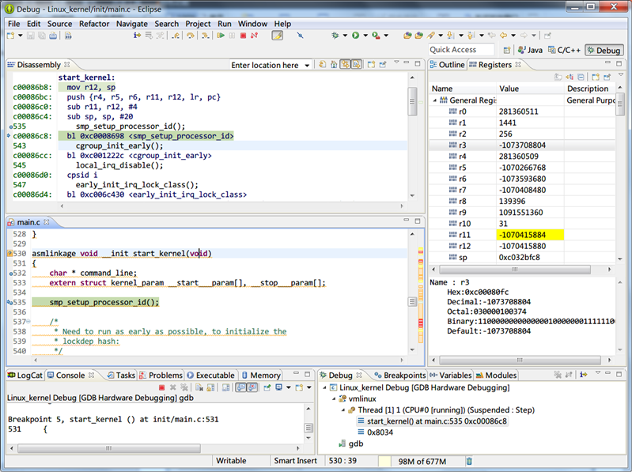
这个调试差不多是搞起走了.如果是分析Android的源码,看一看跟一下还是很不错的.不过还是有一个问题没有解决,关于汇编和符号不对应的问题.大家可以群策群力搞一下!
参考链接:
http://wenku.baidu.com/view/95c69448e518964bcf847c2f.html
http://blog.csdn.net/flydream0/article/details/7070392
http://www.lenky.info/archives/2013/03/2238
http://blog.csdn.net/liushuaikobe/article/details/8646555
http://x-slam.com/da_jian_eclipse_qemu_gdb_diao_shi_linux_kernel_huan_jing
文章作者 忆杰
上次更新 2014-09-27